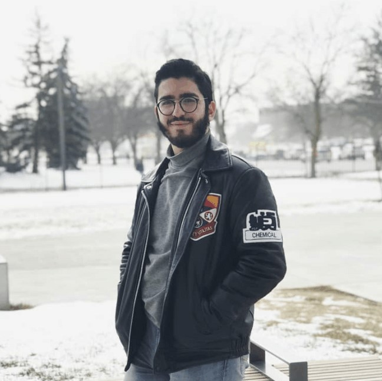
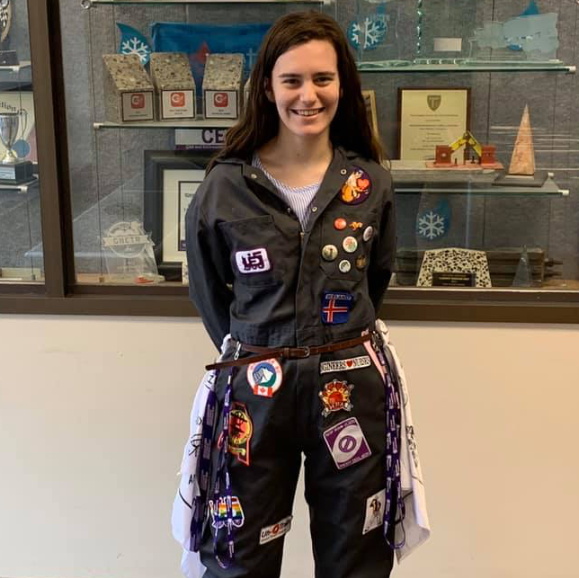

Engineering Jacket

COVID-19 Update:
Jackets were available for pickup March 9-10, 2020. Due to the current situation, jacket pickup is temporarily
postponed until September. Any additional updates will be posted on Facebook @westernues
When:
Leather jackets are sold twice a year, once at the beginning of the Fall semester and once at the beginning of the
Winter semester. Keep an eye on the announcements during these times so you don’t miss the day!
Where:
Sales, Sizing, and Pickup all occur in the UES Lounge (SEB 1001)
Cost:
Jackets will cost $435 in the 2019-2020 year, You can add 1-2 inside mickey pockets for an additional $10 each
(Highly
recommended). Purchase can be done via Cash, Cheque, or Credit and the price includes tax
Boilersuit

Boilersuits are grey coveralls. The tradition of coveralls in Engineering began in the 1960s in Sweden and Finland.
Their original purpose was to be worn when students visited companies but evolved into being used for partying and
to
identify their department. These coveralls were eventually adopted by schools in Canada.
Boilersuits are a tradition at Western Engineering giving students an opportunity to show their Engineering spirit
and
pride. Students who are involved in the Eng community are awarded a Boilersuit and become a part of this fun
tradition.
The goal of the suit is to be a visual representation of your time as an Engineering student by sewing on patches
detailing your interests, events and clubs. They are also worn to conferences where patch trading with other schools
allows you to meet new people and add to your suit. The Boilersuits also host events that give Boilersuits a fun way
to socialize with like-minded students. Check back soon to this page for updated information on how you can apply to
be a Boilersuit this year!